The objective of this section is to provide information on the topic under consideration, along with examples and exercises. You should be able to work through it in R or R studio. This section requires no additional functions or packages to be loaded.
The specific objective of the material in this script is to introduce you to different graphic used in R. By the end you should have a better understanding of the concepts you worked with before, and should be better-placed to start developing and editing scripts yourself. The particular topics we shall cover are:
Univariate graphs
Multivariate graphs
Controlling layout
Printing graphs
Univariate graphs
In this section, we look at graphics that we may create with a single variable. This includes histograms, boxplots, bar charts, as well as QQ plots. These are usually important in checking the distribution of variables in your dataset or checking the residuals of a fitted model.
Histogram
The function that is used to produce a histogram is the hist() function. A number of arguments are used in the hist() function.
Before you go further, recall that you can produce random numbers from a normal distribution by the use of the function rnorm(). We use this to simulate some random temperature data
# generates a vector of 100 numbers with mean 0 and standard deviation 1temperature<-rnorm(100,mean=0,sd=1) # explore the dataprint(temperature)
#we can use the hist() function to make a histogram of these data hist(temperature)
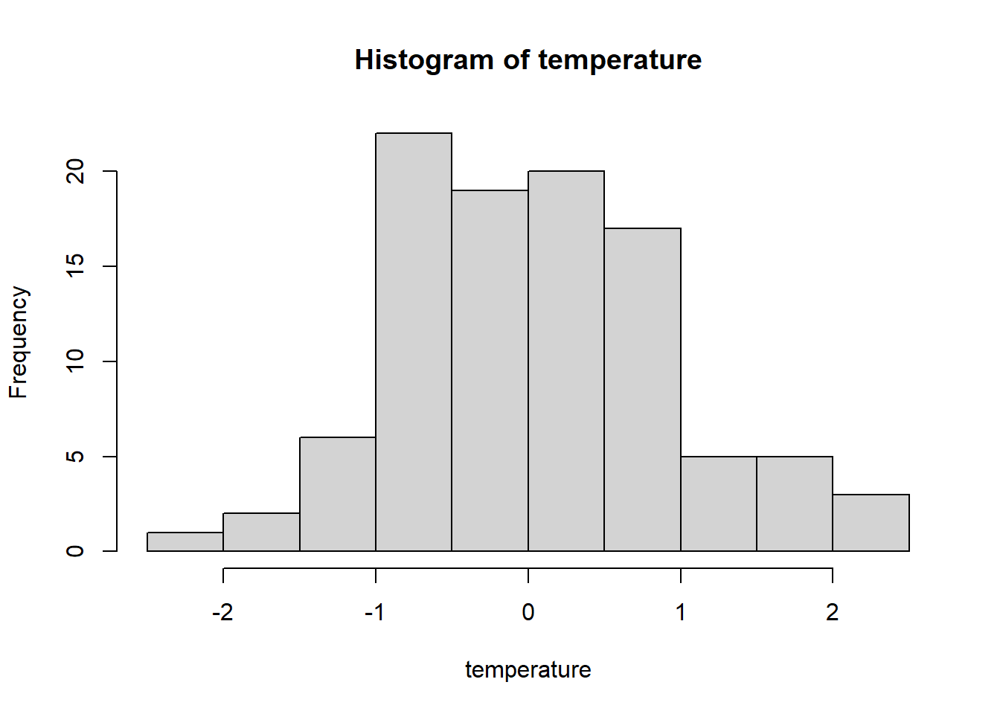
This produces a histogram with grey bars, an x-axis labelled "temperature" and the title "histogram of temperature". All these three can be changed to your preference by adding extra arguments to the hist() function. Changing name of x-axis: This is done by adding argument xlab ="name of axis". Note that the name of axis is in quotation marks. Lets assume these data is temperature data
hist(temperature, xlab="Temperature /?C")
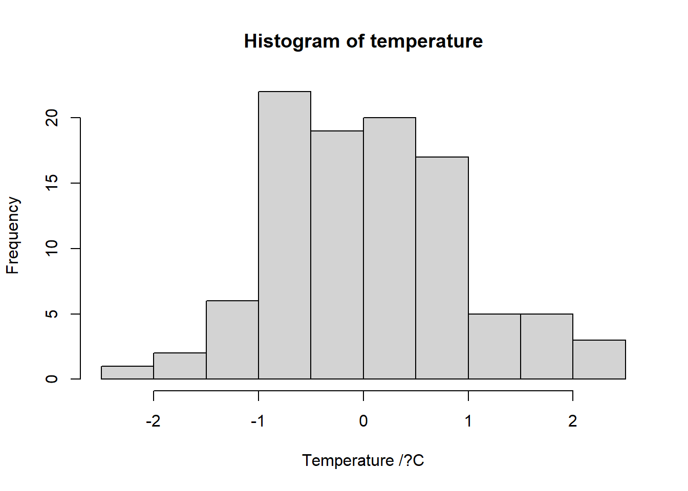
Tip
Note the "solidus" or / inbetween the name of the variable (Temperature) and the units. This is good practice for presenting units in axis labels, favoured by many publishers. The quantities on some axis labels have dimensions which are ratios, like kg per ha. This can be done "kg/ha" but that is not good scientific practice, particularly if you are using the solidus to indicate units as above. It is better to follow the "ha" with a power "-1". In R we can do this as follows (of course your data won’t be realistic for this example!)
hist(temperature, xlab=expression("kg ha"^-1))
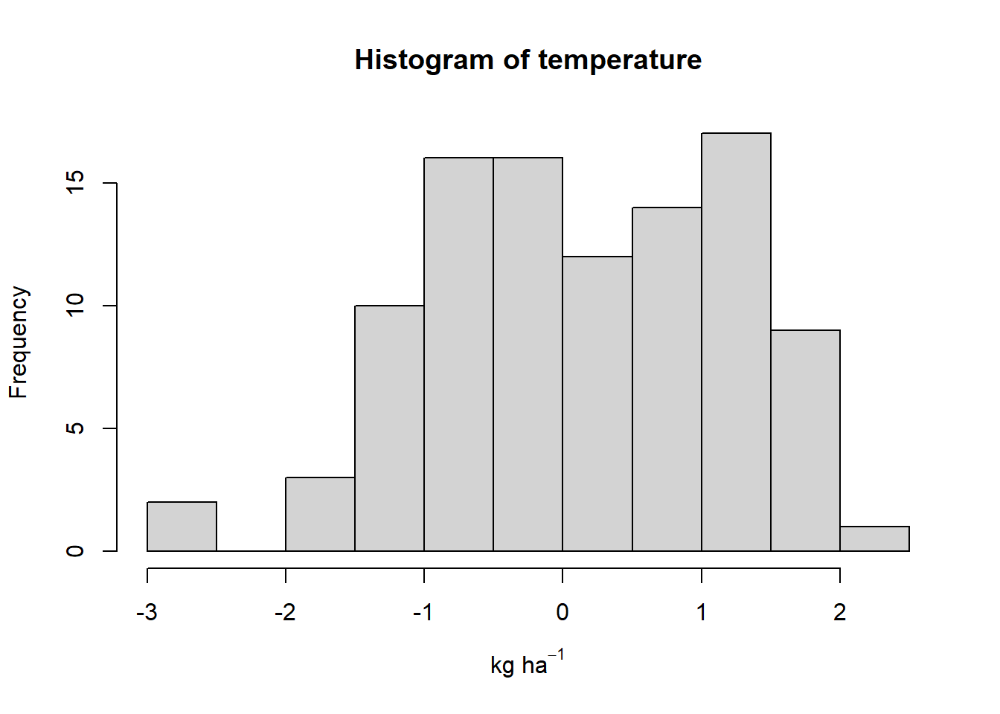
Changing main title
This is done by adding argument main ="name of main title". Note that the name of axis is in quotation marks. Lets assume these data is soil temperature data.
This is done by adding argument col ="color". There are various options of colors that can be used. You can check the various options of colors you can use by typing colors().
Generate 100 random variables with mean 50 and standard deviation 5 and
generate a red histogram. Label the histogram appropriately, assuming that these are data for Maize yield in kilograms per hectare for Chitedze experimental station.
QQ plots
The second type of plot we can look at is the qqplot. This plot is used to check normality of data. It is called by the function qqnorm(). The argument is a vector of data.
qqnorm(temperature)
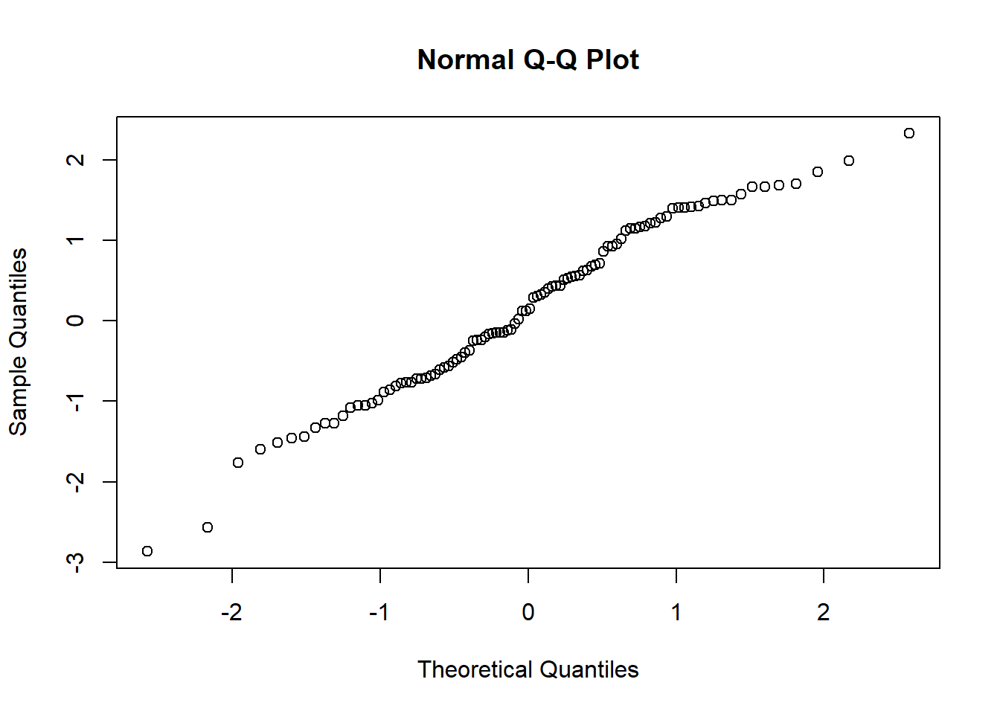
The argument for this function is vector data. The sample quantiles are just the data values, plotted in increasing order. The theoretical quantiles are the corresponding values for an ordered set of the same number of variables with the standard normal distribution (mean zero variance 1). This means that, if the data are normal, the qq plot should lie on a straight line. The qqline command adds this line to the plot to help your interpretation
qqnorm(temperature)qqline(temperature)
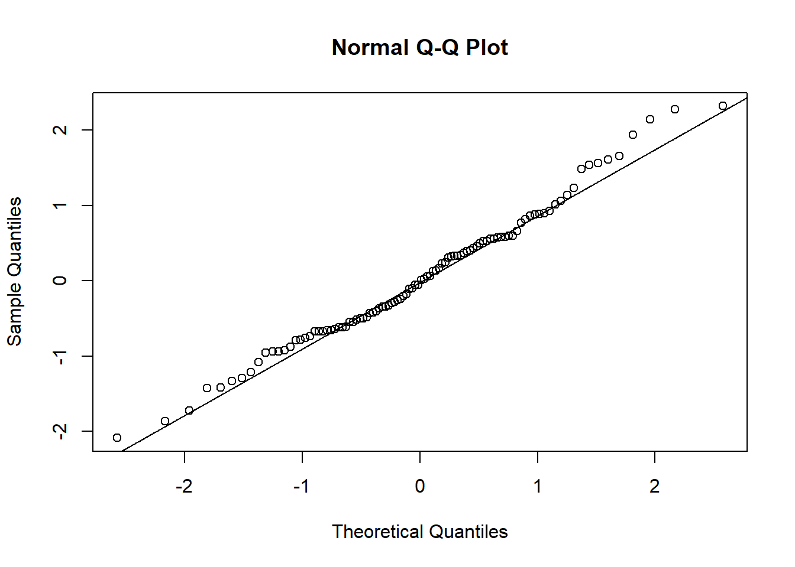
You can add a plot title using "main = "" as in “histogram and you can change the qqline color if you so wish by adding the col="" argument.
qqnorm(temperature,main="QQ plot for random normal temperatures")qqline(temperature, col="red")
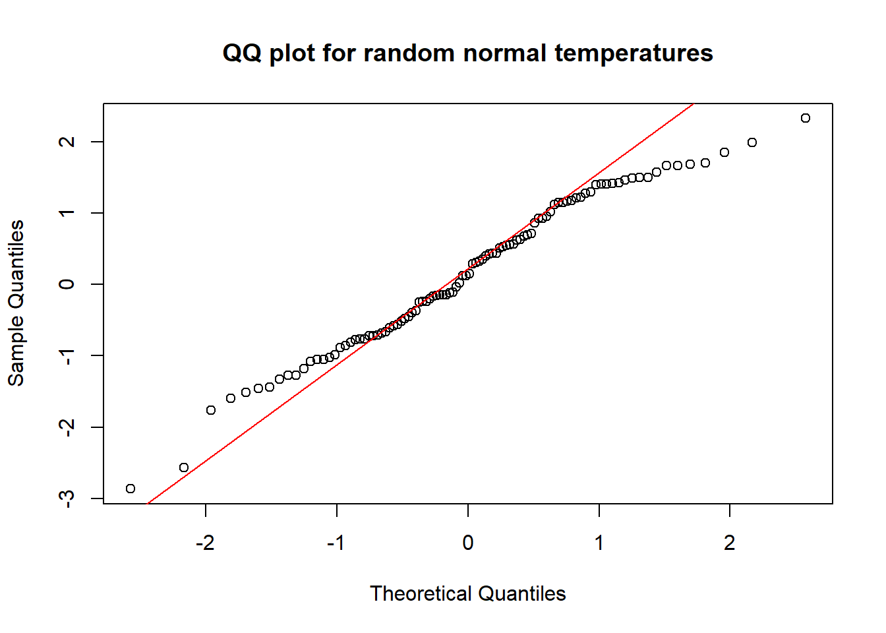
Exercise: qq plot
Generate 100 random variables with mean 50 and standard deviation 5 and
generate a qq plot with a 1:1 line.
Label it appropriately assuming that these are data for Maize yield in kilograms per hectare for Chitedze experimental station.
Box plot
Box plots give summary of the minimum, first quartile, median, third quartile inter quartile range, maximum and outlier values in your dataset. They are used for univariate data but can be split based on a factorial variable e.g gender. The function that is used to call for a boxplot is boxplot() and the argument is vector data. let us try ploting using the data we generated earlier.
boxplot(temperature)
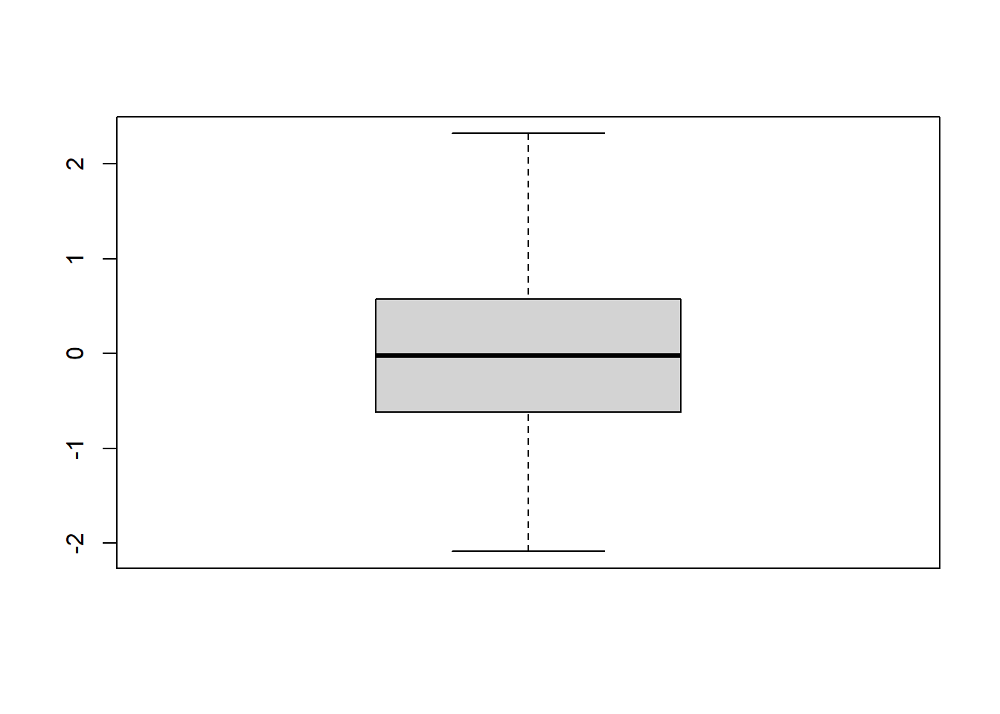
You can choose to label your box plot with main title, color and label the axis similar to what we did for histograms. This time however, we label y-axis using ylab argument.
The thick black line in the centre of the boxplot corresponds to the median value of the data (half the values are smaller, half are larger). The bottom of the box (the blue shaded area) is the first quartile of the data, Q1 (25% of the values are smaller), and the top of the box is the third quartile of the data, Q3 (25% of the values are larger).
In exploratory data analysis we call the quantity H = Q3-Q1 the “h-spread”. R calculates what are known as “inner fences” of the data which are at Q1-1.5*H and Q3+1.5*H The “whiskers” above and below the box join the Q1 to the smallest data value inside the inner fences, and Q3 to the largest value inside the inner fences. If there are values outside the inner fences then these appear as points on the plot.
It is possible to produce a graph in which separate boxplots are produced for different levels of a factor. As an example, let us assume that the first 50 of the values in data come from soil collected at Liempe and the second 50 are from Domboshava. We can create a factor called "site" to reflect this:
site <-factor(rep(c("Liempe","Domboshava"),each=50))
We then want to plot our data split by the corresponding site we have sampled. We use the function boxplot() but this time we state that the data is a function of a variable using ~ symbol.
boxplot(temperature ~ site )
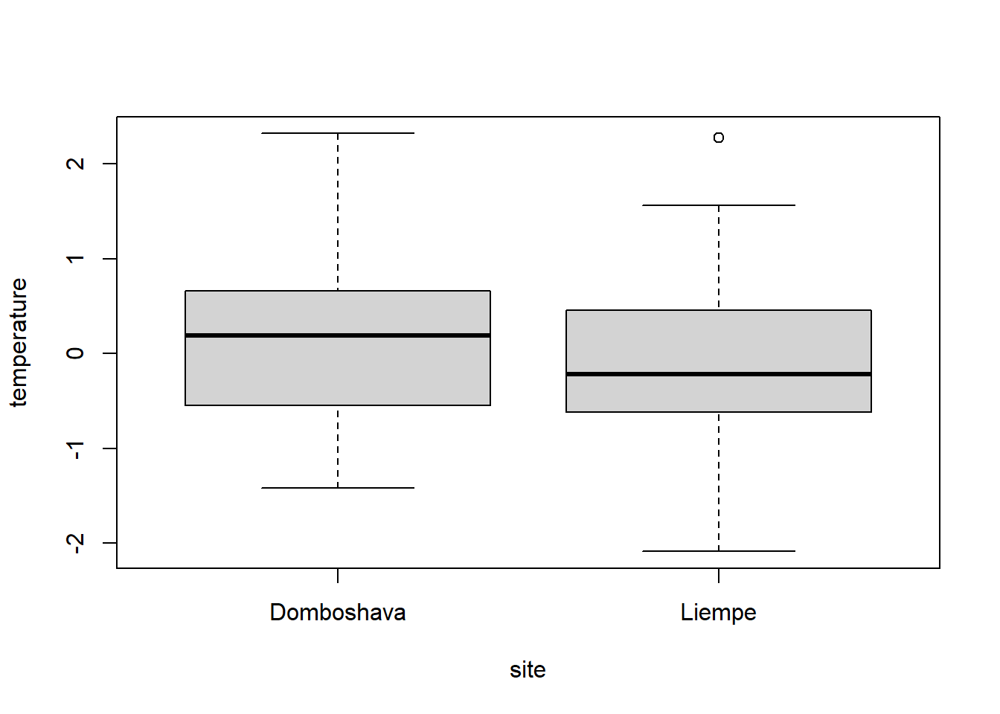
For data stored in a data frame, we can simply provide the variable names and then specify the dataset with the data argument. Let us create a dataframe using the vectors site and data.
Temperature_Data <-data.frame(site = site, temperature = temperature)
we can now plot boxplots for different levels of the factor “site”.
boxplot(temperature~site, data = Temperature_Data)
The argument, data = Temperature_Data, tells the function that temperature and site are supplied by the Temperature_Data dataframe. You can choose to add labels to your box plot are earlier mentioned.
The following R commands will generate a set of random data, simulating 500 measurements of body weight on adult males, and 500 for adult females, These data, and a factor "gender" are then written into a dataframe "body_weight".
Using these data create:
two boxplots one for all the weight data combined and
another plot that seperates the female and male boxplots.
label the boxplots appropriately.
are there any outliers in your data?
Bar plot
This allows us to create a bar chart where the heights of the bars are based on the values given by the vector input. The function that is used to call for a barplot is barplot() and the argument is vector data. There are additional options for giving names to each of the bars, for instance, and for coloring the bars, as you have seen for other ealier plots. This function usually works well when you have tabular data. The simplest form for the function barplot() is given below
barplot(c(3, 9, 5))
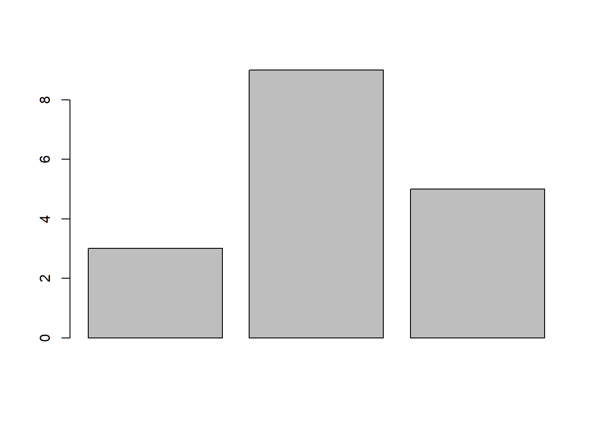
As you can see from your plot, it has no labels and it is therefore difficult to get any information from it. let us create some data of gender count in a population of 100 people using the sample function.
If you print gender, you notice that it is a vector. However, we need to generate tabular data from the gender vector which shows the gender count for each gender. We do this using the table() function.
genderCount <-table(gender)print(genderCount)
gender
F M
49 51
If we print genderCount, you see that it is now in a table form. Now we can create the barplot
barplot(genderCount)
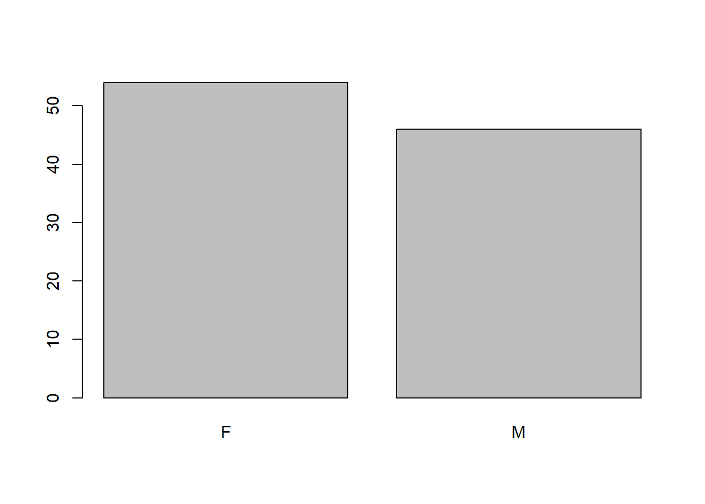
You can choose to add labels to barplot as earlier mentioned for the previous plots. You can as well change the color of the bars.
barplot(genderCount, ylab="count", xlab="Gender",col="red",main="Number of Females and Males")
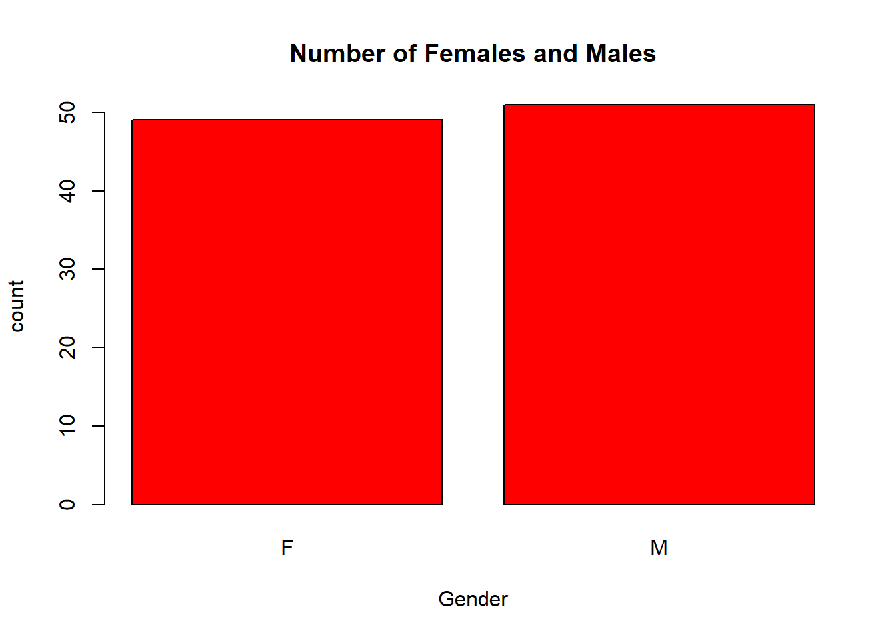
One thing that you may notice is that the bar for female goes above the y-axis. this means that the default scale for y-axis is not appropriate. we can change this adding an extra argument called ylim. this will be a vector of length 2 that shows the minimum and maximum value of the axis. In this case let us make the range of the axis to be from 0-70.
ylim=c(0,70)#barplot(genderCount,ylim=c(0,70) ,ylab="count", xlab="Gender",main="Number of Females and Males", col="red")
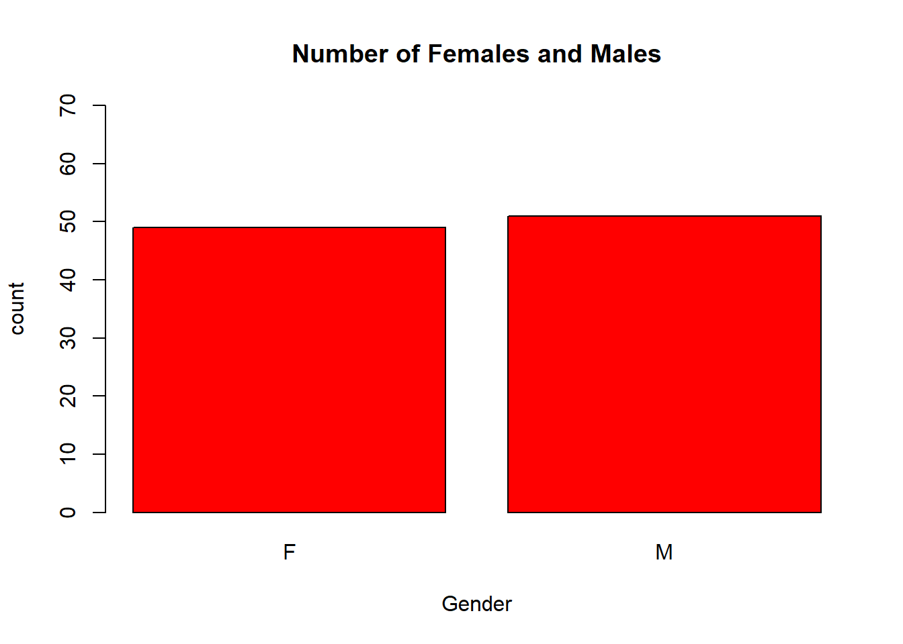
Exercise: Bar plot
The data below are a simulated sample of 100 locations at which the soil class is identified
Create a bar plot to show the frequency of the three soil types in the sample,
label it and adjust the axis and colour appropriately.
Multivariate graphs
In this section, we look at graphics that we may create with multiple variables. This is mostly done using the plot(). They are important in checking how two or more variables relate to each other.
Plots
The simplest plot() function takes in two arguments. The first argument represents the x-axis while the second argument is the vector of y-axis. Let us create two vectors, one for days and the other for temperature.
days<-c(1,2,3,4,5,6,7)temp<-c(25,28, 30,26,27, 28,26)# We can plot these two variables to see how temperature varied for different days.plot(days,temp)
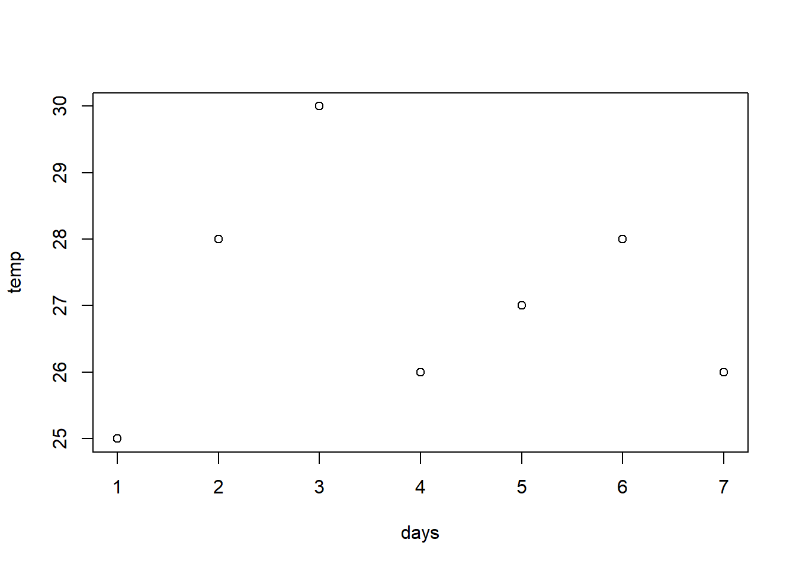
If you wish, you can specify the x and y variables. This means that the order of these arguments will not matter as you can place them interchangeably.
plot(y=temp, x=days)
From the scatter plot, you will notice that, by default,it added axis labels that are simply the names of the objects we passed i.e days and temp and there is no title. All of these things, can be added as previous graphs.
The list below shows arguments that can be added to the plot function as discussed already:
xlab=“day”
ylab=“temp”
main=“Temperature variations on different days”
ylim=c(24,32)
xlim=c(1,7)
col=“red”
plot(y=temp, x=days,# x axis labelxlab="day",# y axis labelylab="temp",# titlemain="Temperature variations on different days",# y axis rangeylim=c(24,32),# x axis rangexlim=c(1,7),# colorcol="red" )
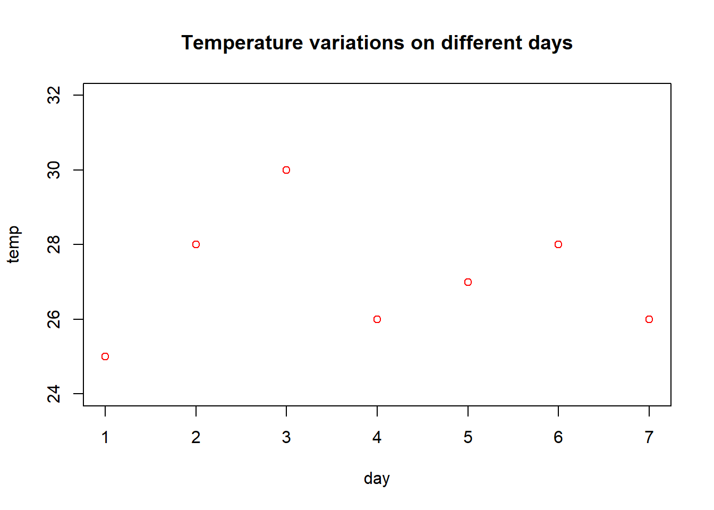
In R, there is a an embedded dataset called iris. This is a famous biological data set with measurements on flowers of different species of iris , often used in multivariate statistics. You can call this data by simply typing “iris” in the console or on a script.
Iris contains data for Sepal Length, Sepal Width, Petal Length and Petal Width. These variables are presented in the columns of the data set, and each row corresponds to a particular individual flower. You can see the exact variable names in the data set with the command
.. so, for example, to plot a histogram of Sepal Length, run the hist command as follows
hist(iris[,"Sepal.Length"])
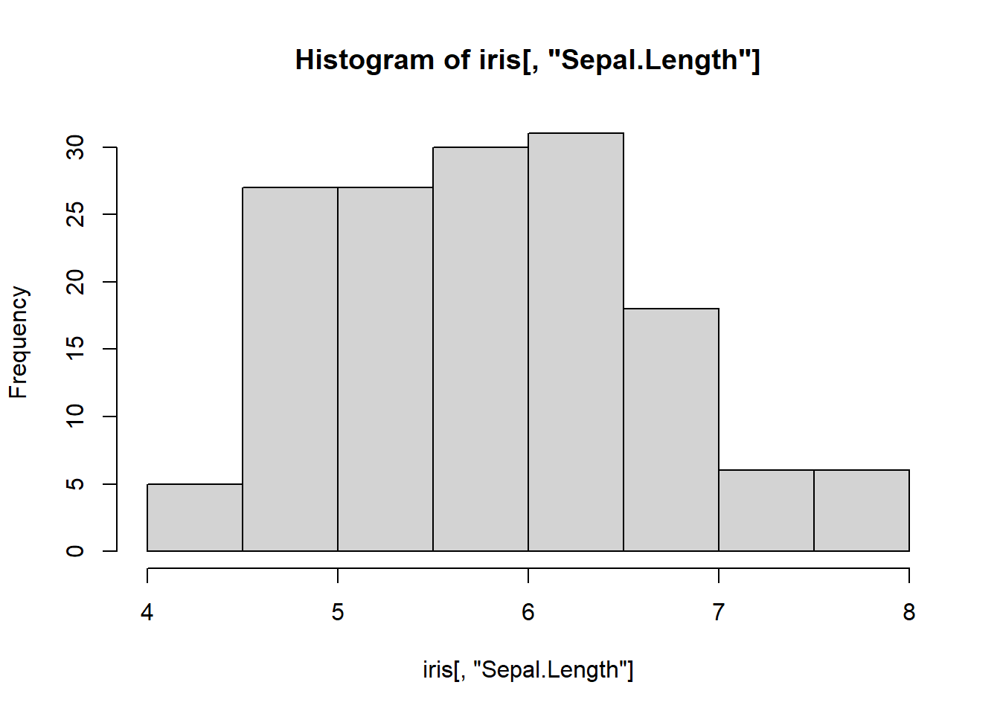
Using these data, create a plot that shows the relation between the Sepal Length and Petal Length. label the plot and adjust axis limits appropriately
Plot Symbols
In the graphics that we have created so far, we have mostly left the plotting symbol as the default, black, unfilled circle. However, We can change the symbol by using the argument pch.
You can change the plotting symbol by asigning a numeric value using = sign. There are two categories of symbols. Those that range from 0 to 20 and from 21 to 25. For the symbols that range from 21 to 25, in addition to being able to set the color, we can also set the fill. The fill of the shapes is actually set with the argument bg, but just like with the argument col, we can assign any color value.
plot(y=temp, x=days,xlab="day",ylab="temp",main="Temperature variations on different days",ylim=c(24,32),xlim=c(1,7),col="red" ,pch=17,)
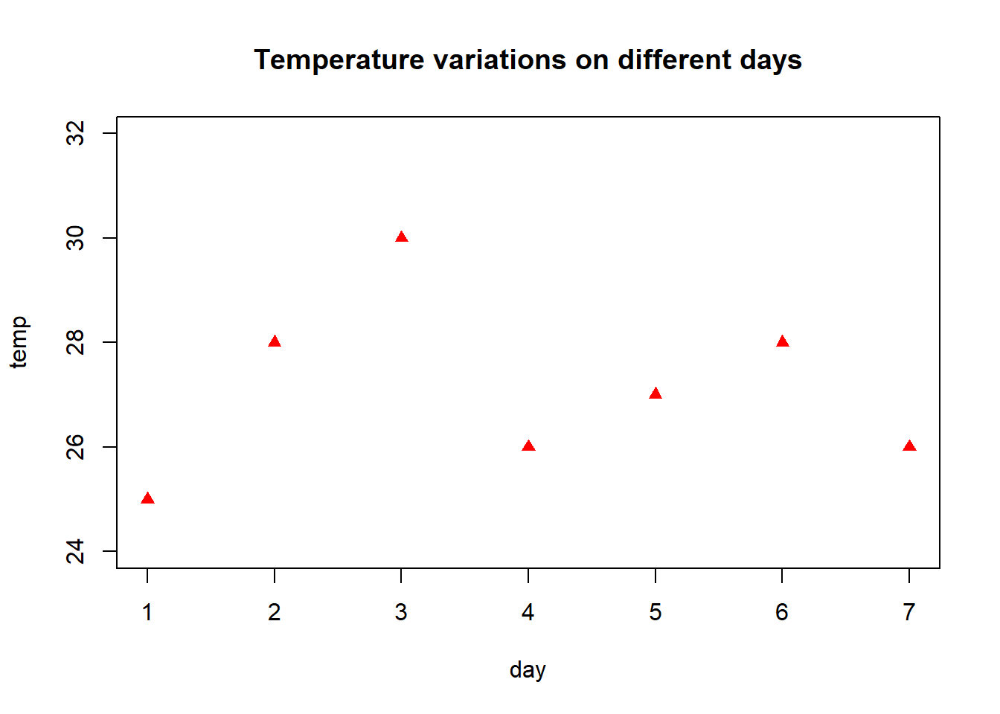
Let us change the fill color of the symbol by using the bg argument. Remember that we can only use this when the symbol used ranges from 21 to 25.
plot(y=temp, x=days,xlab="day",ylab="temp",main="Temperature variations on different days",ylim=c(24,32),xlim=c(1,7),col="red" ,pch=23,bg="blue")
We can also set the size of the symbols. We do this with the argument cex. This argument is simply a numeric value indicating how many times bigger(or smaller) than the usual size we want our points. The default is 1.
plot(y=temp, x=days,xlab="day",ylab="temp",main="Temperature variations on different days",ylim=c(24,32),xlim=c(1,7),col="red" ,pch=23,bg="blue",cex=2)
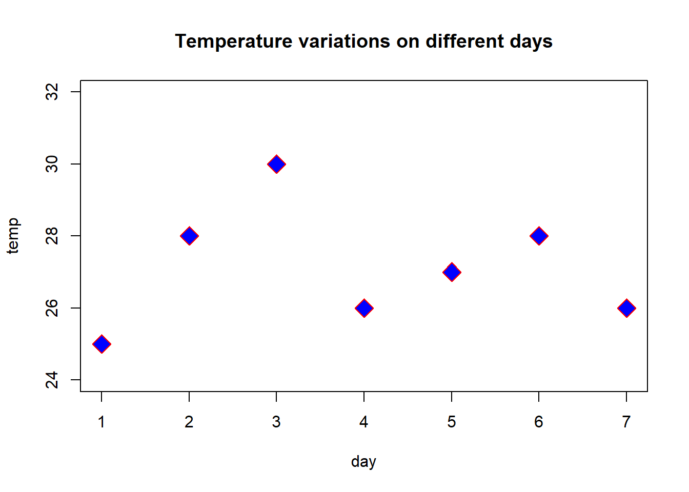
Exercise 3.6
From your previous plot in Exercise 3.5
Update plots with different symbols, fill colors and symbol size. You can use any symbol and fill color of your choice.
Tip
Note: not all symbol types accept changing fill color.
Plot types
The plot we have created so far are scatterplots. We can however, use alternative plot types. These may include line plot, step plot and lines with points among others. We can switch our plot to any of these graphics by using the 'type' argument. We pass to this argument one of a series of letters with default is p, to indicate points, but we can also have l, b, c, o,h, s and n.
Let us generate plot types l, using the days and temp vector.
plot(y=temp, x=days,type="l")
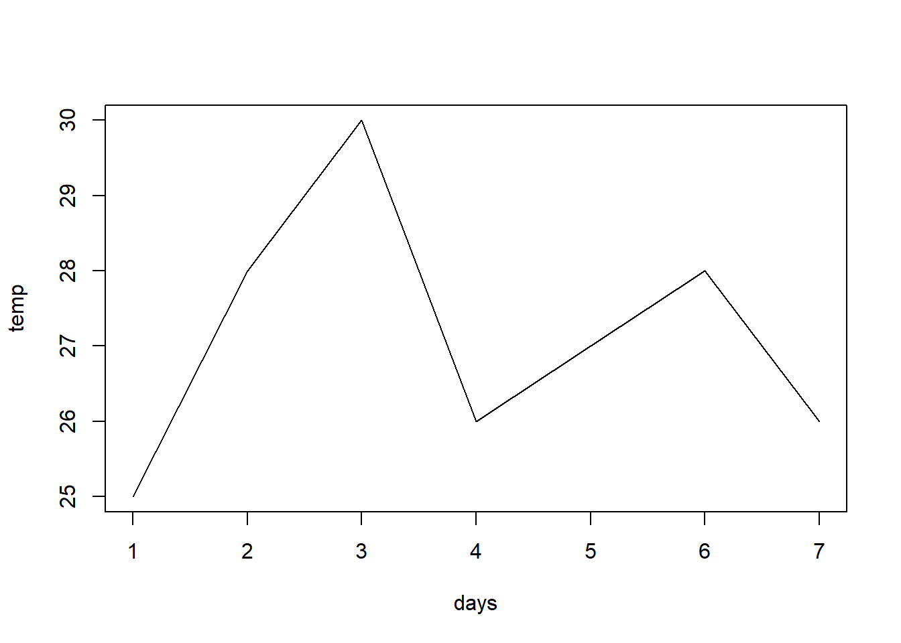
Exercise 3.7
Create different types of plots using the days and vector data you created.
Create different types of plot using the days and .
Type “n” plots
You may have noticed that when you used type= "n", your plot was blank. There is nothing wrong with your code. type "n" is a blank plot. One may ask, why should we have a blank plot? This is useful when one wants to plot data from different sources (which we may want to differentiate) but representing same variables. To demonstrate this, let us create a dataframe called 'data_temp' that has three columns soil_temp, soil_moisture and site
We can now plot them on the same graph of how soil-temperature varies with soil moisture at the three sites. First we plot the type "n" graph and giving it all the necessary labels using dataframe data_temp.
plot(data_temp$soil_moisture,data_temp$soil_temp,xlab="Soil moisture",ylab="Soil temperature", xlim=c(8,20) ,type="n")# Now, add the point from different sites giving them different shapes and colorpoints(liempe_data$soil_moisture,liempe_data$soil_temp, pch=15, col="red")points(chitedze_data$soil_moisture,chitedze_data$soil_temp, pch=16, col="green")points(domboshava_data$soil_moisture,domboshava_data$soil_temp, pch=17, col="blue")
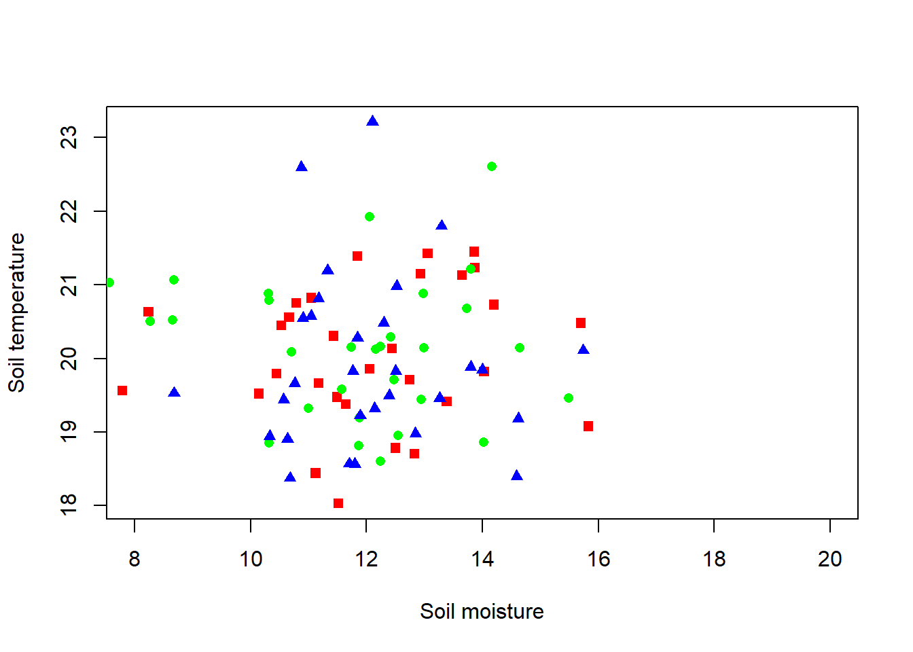
Exercise 3.8
From your plot in Exercise 3.7 ,Update plots to differentiate the species using symbol type and color, fill colors and symbol size. You can use any symbol and fill color of your choice.
Tip
Note: not all symbol types accept changing fill color.
Adding Legend to plot
Adding a legend to your plot will make your plot easy to translate. From the plot in the previous section, it is not clear what the different colors or shapes represent. A legent provides information for this.The function to use is legend()
The first argument to this function is the position of the legend on your plot. This can be done either by using X and Y co-ordinate location or a single string of the form "topright", "bottomright", "bottomleft", "topleft", or "center" among others.
We then need to specify the legend text using legend.text argument. This is a vector of text that will be used to label the legend. The order of the text in the vector should correspond to the order of the points in the plot.
We then specify colors, points, and so on, for data added maintaining the ordering.
Lets create the legend for the plot of soil moisture vs temperature at the sites liempe, chitedze and domboshava. Note that a plot must already be active for legend to be used.
From your previous plot in exercise 3.8, add a legend to the Updated plot that differentiate the species using symbol type and color, fill colors and symbol size.
Controlling graphical layout
When we create plots, we may want to present them on the same page for easy comparison. This can be done in two ways, firsly, using the par() function and secondly, using layout() function.
Using par() function
We can set up a graphics device using the mfrow argument in the par() function. The argument is a vector of the number of rows and columns into which our device should be split. When we then create graphics, they will be entered into the device across the rows, starting in the top left of the grid.
As an example, suppose that we have some random data that we want to plot as a histogram, boxplot, QQ plot, and against its index. Since we have four plots, We set this up as a 2*2 grid plot area, using the par().
par(mfrow =c(2, 2))
This sets up an empty 2*2 plot area. As you start ploting, the plots will start filling up the plot area. Let us do this by ploting histogram, boxplot, QQ plot, and against its index.
Once you have set up the plotting area, it will remain active untill you set it back to the default by setting mfrow argument to c(1,1).
par(mfrow =c(1, 1))
Sometimes when putting graphs together in a panel like this you might find that the individual graphs need adjustments to their format. For example, the y-axis labels "Frequency" and "Sample quantiles" in the example above are perhaps too close to the edge of the panel. The par command with argument "mar" for margins will adjust this by adjusting the margins for each individual graph to 5 lines (bottom), 5 lines (left side), 3 lines (top) and 2 lines (right side).
par(mar=c(5,5,3,3))
Try calling this par command after par(mfrow=c(2,2))in the example above to see its effect, and experiment with different numbers of lines in the margin. The default setting is c(5, 4, 4, 2) + 0.1 which shows that you can make finer adjustments to the margins than whole numbers of lines.
This allows finer control of the layout of our graphics. It allows you to control the width and height of each of the columns in our graphics device. The main argument is a matrix that specifies the locations for each graphic. Each graphic is represented by an integer value and appears in the grid in all regions where that value appears.
As an example, suppose we want to plot four graphics, as in the previous section, but we want the first histogram to take up the entire first row and the other three graphics to appear underneath in one row. In that case, we would create the following matrix
mat <-rbind(1, 2:4)
Thus, the first graphic would fill all cells containing the value 1, in this case, the entire first row. The second graphic would appear in the position of the 2, and so on. To set this as our layout, we pass it to the layout() function, followed by the graphics in order. Let us first generate random numbers to work with.
x <-rnorm(100)layout(mat)hist(x)boxplot(x)qqnorm(x)plot(x)
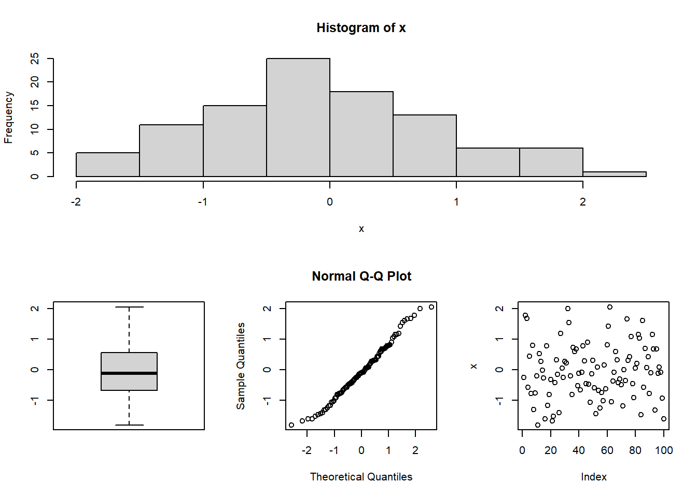
Exercise 3.10
Using the iris data, generate
histogram of Sepal Length,
boxplot of Petal Length,
qq plot of Petal Width and
a plot of Sepal Length against Petal Length on the same plot area with equal dimensions.
Exercise 3.11
Adjust, the plot in the previous exercise so that histogram occupies the whole bottom of the plot area and the other three occupy the top of the plot area in equal dimensions.
Saving/Printing plots
Now that we have known how to create graphics, one thing remaining is to print out the ouput. A number of graphics devices are available, including PDF, PNG, JPEG, and bitmap. If we do not specify the device to use, the default device will be opened, and in R this is the Plot tab.
To print a graph to pdf ,png and jpeg, one must create the device before ploting the graph. This is done by using the functions
pdf("name.pdf")png("name.pgn")jpeg("name.jpeg")
The argument for these functions is the desired name of the document in quotation marks e.g. pdf("myFirstGraphic.pdf"). When this function is run, the plot tab in R will not appear but a pdf of the graph will be produced in the working directory.
Let us create a histogram of 100 random numbers and save it as a pdf document.
# Create a pdf devicepdf("myFirstGraphic.pdf")# Create a histogram of 100 random numbershist(rnorm(100))# Close the devicedev.off()
Remember to close the device when done using the dev.off() function, otherwise all your graphics onwards will be pdf documents and not any other device e.g the R plot tab.
Exercise 3.12
Print the plot you generated in EXERCISE to a PDF, PNG and JPEG giving it an appropriate name. Remember to close the device